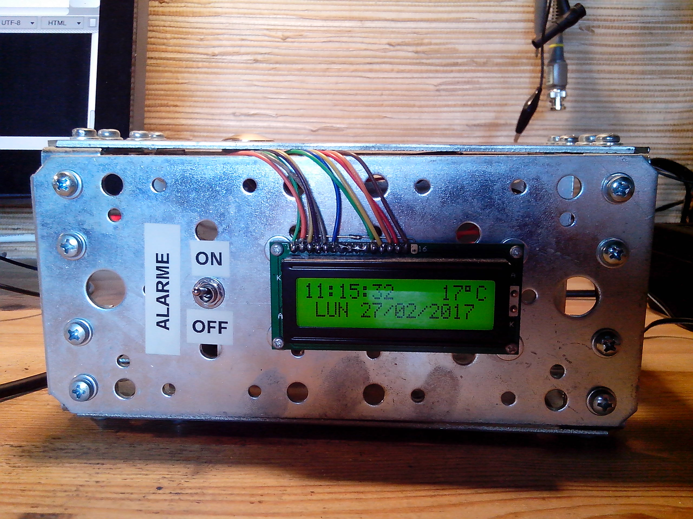
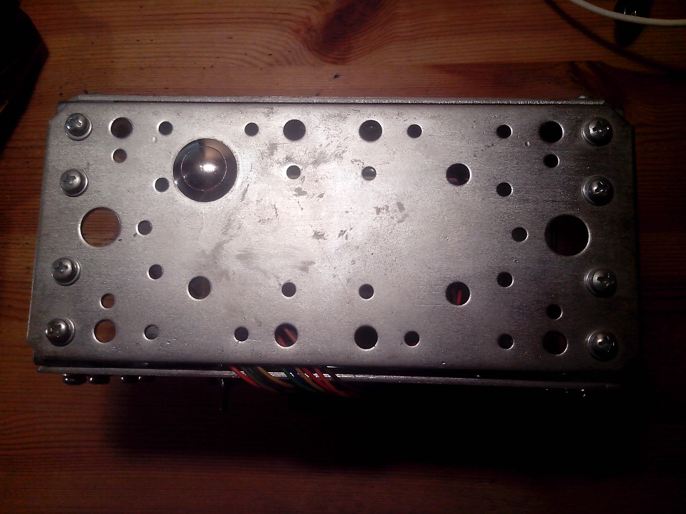
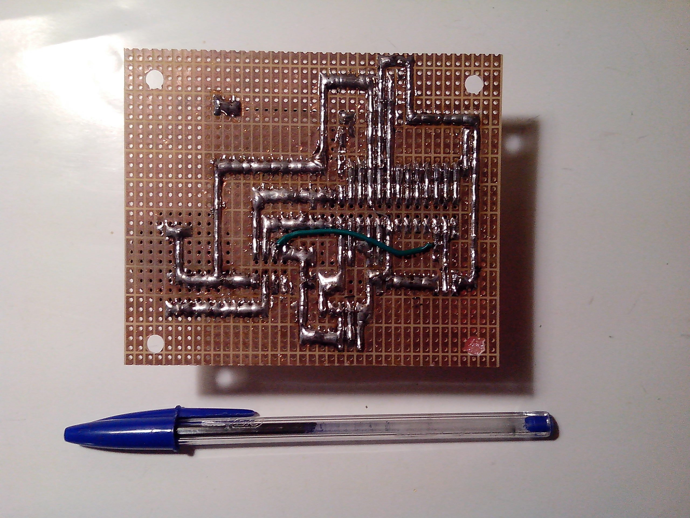
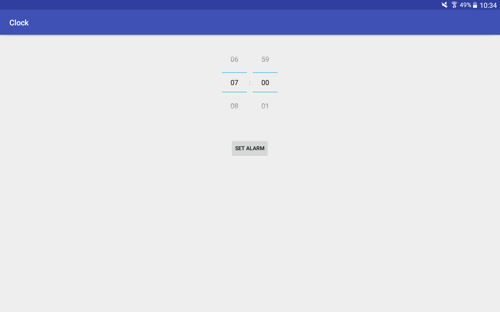
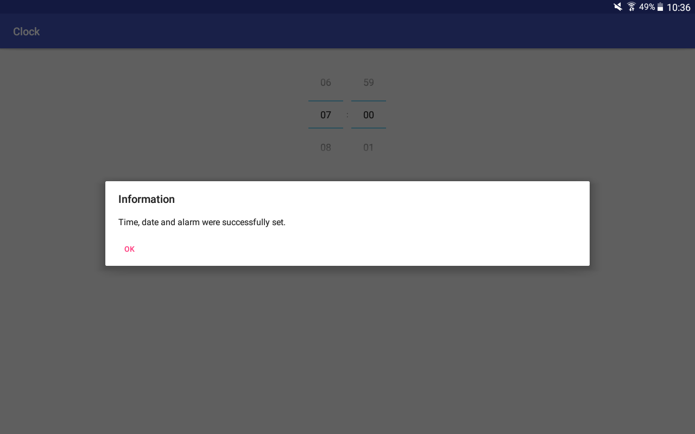
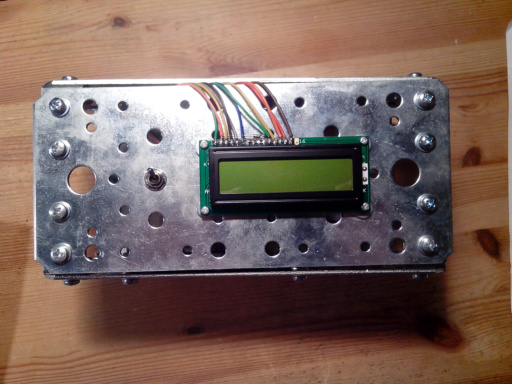
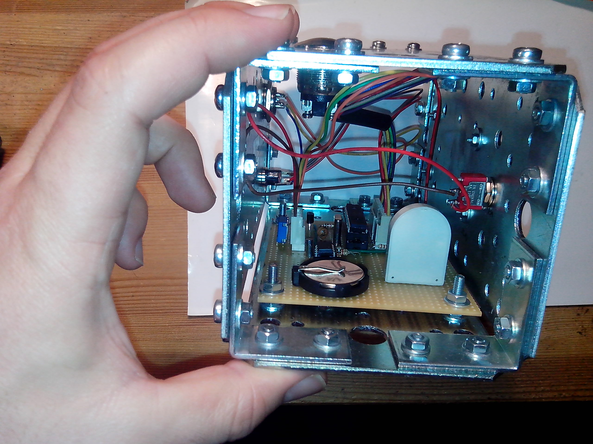
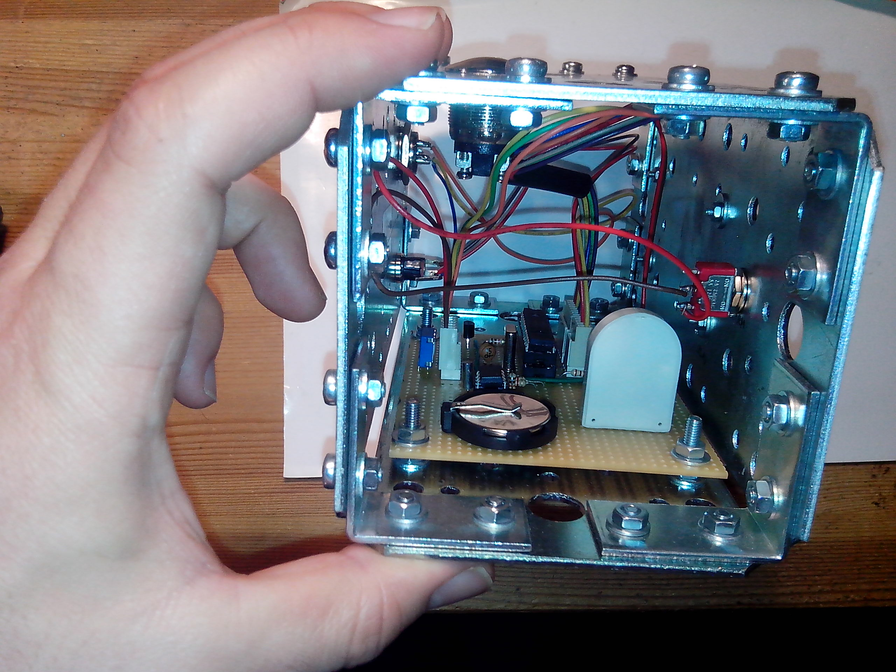

Horloge numérique simple et robuste
{kind=link}
Qui n'a jamais pesté contre les mauvais contacts des interrupteurs d'un réveil ? C'est à cause de réveils parfaitement fonctionnels mais aux boutons capricieux que j'ai décidé de construire ma propre horloge.
Mon réveil ne dispose que de deux robustes boutons. Un interrupteur à levier qui permet d'activer ou de désactiver l'alarme et un bouton poussoir anti-vandalisme qui active le rétroéclairage de l'écran. Ces deux boutons permettent aussi de couper l'alarme lorsqu'elle sonne.
C'est à l'aide d'un port série que les différents réglages de l'horloge sont faits.
Les réglages peuvent être réalisés à partir d'un PC à l'aide d'un programme en ligne de commande ou via un téléphone ou une tablette grâce à une application Android.
Ce projet a aussi été décrit sur Elektor Labs.
Caractéristiques techniques
- Ecran LCD rétroéclairé de 2 lignes de 16 caractères.
- Deux boutons seulement. Le réglage de l'horloge se fait par un port série.
- Alimentation secteur via un chargeur standard de téléphone délivrant 1A sous 5V (n'importe quel chargeur fournissant plus de 150mA sous 5V convient).
- Gestion du temps assurée par une Real-Time Clock (RTC) DS1307, elle-même sauvegardée par batterie en cas de coupure secteur.
- Affichage de la température de la pièce à l'aide d'un capteur LM35DZ.
- Un microcontrôleur PIC16F876 gère le système.
Mécanique
Le boîtier se devait d'être composé de plaques en acier. Sur la face avant se trouvent l'écran ainsi que l'interrupteur à levier qui permet d'activer ou de désactiver l'alarme.
L'arrière du boîtier accueille le jack d'alimentation et le port série (même câble que pour le robot Explorer).
{kind=link}
La face supérieure comporte un unique bouton blindé qui permet d'allumer le rétroéclairage de l'écran et de couper l'alarme lorsqu'elle sonne.
{kind=link}
Electronique
Le schéma électrique du réveil (disponible sur GitHub, tout comme le code source) est simple. Le but était de limiter les connexions vers l'écran pour éviter de tirer trop de fils et faciliter la réalisation du circuit sur une plaque d'essais.

Le rétroéclairage de l'écran consomme trop de courant (100mA sous 5V) pour que le réveil soit alimenté par pile. J'ai préféré utiliser une alimentation à découpage de téléphone plutôt qu'une classique alimentation transfo + pont de diodes + régulateur linéaire pour deux raisons :
- L'alimentation à découpage est bien plus économe en énergie qu'une alimentation linéaire (sachant que l'horloge va fonctionner 24h/24).
- Cela évite de mettre des condensateurs électrolytiques sur le circuit, ce qui rend le circuit plus résistant au temps.
{kind=link}
La RTC est connectée au bus I2C du microcontrôleur. Elle utilise un quartz de 32KHz pour compter les heures et la date. Une pile au lithium permet à la RTC de continuer à fonctionner même en cas de coupure du courant, ce qui est pratique en cas de micro coupure du secteur car l'heure de sonnerie de l'alarme est stockée dans la RAM de la RTC.
Une pile au lithium CR2032 convient parfaitement pour assurer la sauvegarde des données de la RTC pendant 10 ans. La pile utilisée ici est une CR2430 pour la simple et bonne raison que c'était le seul support de pile au lithium qui me restait.
En dessous de la pile se trouve un buzzer placé verticalement. Il est relié à un des PWM du microcontrôleur pour permettre la modulation du son (même si le PWM n'est pas nécessaire pour la sonnerie que j'ai choisie).
On aperçoit à droite du buzzer un transistor en boîtier TO-225 monté lui aussi verticalement. Ce transistor commande le rétroéclairage de l'écran car un port du PIC ne fournit pas assez de courant.
Pour terminer, on voit en haut à droite le capteur de température en boîtier TO-92.
{kind=link}
Comme d'habitude, les pistes du circuit sont réalisées avec de la soudure.
Logiciel
Le firmware du microcontrôleur est très simple. L'unique pin d'interruption externe du PIC est câblé sur bouton poussoir situé sur la partie supérieure du réveil.
- boucle infinie
- s'il y a de l'activité sur l'UART, réglage de l'heure, de la date et de l'heure de l'alarme
- lecture de la date et de l'heure depuis la RTC
- lecture de la température
- affichage de l'heure, de la température et de la date sur l'écran
- si l'heure de sonner est arrivée, faire sonner le buzzer
- attente du signal à 1Hz généré par la RTC
- routine d'interruption
- gestion d'un timer pour la sonnerie de l'alarme
- gestion d'un timer pour le rétroéclairage de l'écran
- gestion de l'appui sur le bouton poussoir du dessus du boîtier
Un programme en ligne de commande permet de régler tous les paramètres de l'horloge via le port série. Il fonctionne sous Linux, BSD et Windows (via MinGW ou Cygwin).
J'ai aussi écrit une application Android permettant de régler l'horloge depuis un smartphone ou une tablette.
 {kind=link}
{kind=link}
Réalisation
Les divers composants de l'horloge ont d'abord été testés à l'aide d'une carte EasyPIC 7. La vidéo ci-dessous montre le test de la sonnerie de l'alarme.
J'ai ensuite réalisé le circuit en tenant compte des dimensions des plaques en acier et de la position des trous pré-percés.
J'ai alors pu commencer à assembler le boîtier :
{kind=link}
{kind=link}
{kind=link}
{kind=link}
{kind=link}
Premier test d'allumage du circuit monté dans le boîtier :
Fermeture du boîtier.
{kind=link}
 

{kind=link}
Et pour finir, une petite démo du fonctionnement du réveil :
Retour au menu des projets
Page créée le 27/02/2017.